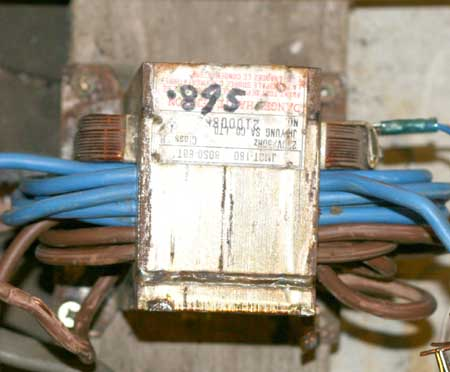
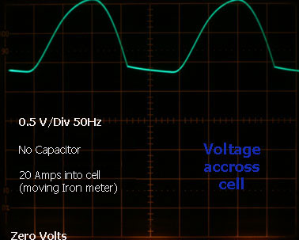
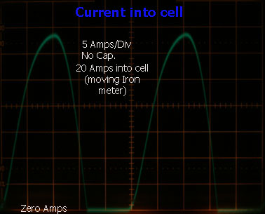
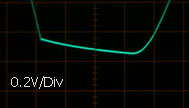
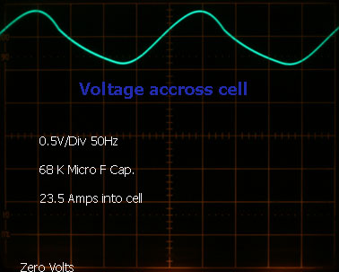
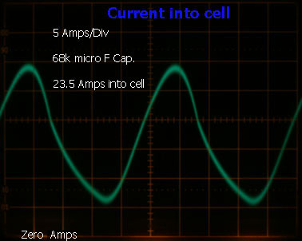
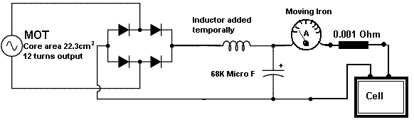

Current and Voltage waveforms of a Sodium Chlorate cell powered with an MOT transformer, bridge rectifier and capacitor

A cell was set up with a large Graphite Anode and Copper Cathodes to investigate current and Voltage waveforms. The Anode current density was approx. 40 to 48mA per square cm. The cell was cold at approx. 14°C.
Current was measured by monitoring the Voltage across a 0.001 Ohm resistor placed next to the cell. Current was also measured using a large 50 Amp moving Iron meter placed after the rectifier. A Variac was also on the input of the transformer. The transformer was a rewound MOT with 12 turns of 10 squared mm cable with PVC insulation. Each turn on the transformer give 0.895 Volts. The winding is not very tidy as I attempted to place too many windings onto the core. The core area of the transformer was 22.3cm squared. The output Voltage held up well when the transformer was loaded to 50 Amps. It give 9.71 Volts out when loaded at 50 Amps into a resistor. The Voltage rose to 10.45 Volts when the load was removed.
The following figures give an indication of Iron losses occurring in the transformer with NO load attached, as the input Voltage was increased with the Variac. A 'Kil-a-watt' meter was used to measure the loss.
140 Volts-------11 Watts, 170 Volts------20 Watts, 200 Volts------45 Watts, 215 Volts------84 Watts, 230 Volts------136 Watts and 236 Volts------171 Watts
This transformer runs hot when full mains Voltage is applied with no load on the output. It runs less hot when a load is on the output. It does not actually blow any fuses but it may get hot enough to melt/damage PVC insulation on a home wound output winding. Be aware of this fact. The number of input windings on MOT transformers are at a minimum as the oven maker knew that the transformer would always be connected to a load, which allows the minimum number of input winding turns to be used.



The traces above show the current and Voltage waveforms at the Chlorate cell when supplied with raw DC from a rectifier (no smoothing capacitor). The Voltage waveform across the cell looks a bit strange. There is a sloping part between Voltage pulses (when current is at Zero). The current appears to stop going into the cell when the Voltage goes down to 2.85 Volts. Perhaps this indicates the (often mentioned in the scientific literature and measured with a third, 'reference', electrode) minimum Voltage required to make Chlorate. The slope that can be seen would appear to be an exponential Voltage drop down to 1.3 Volts where battery action keeps the Voltage across the cell at 1.3 Volts (Graphite Anode, Copper Cathode). The exponential nature of the slope is noticed when the supply is disconnected from the cell and the scope line is seen to drop down to 1.3 Volts over a period of approx. three seconds in an exponential fashion. A magnified view of the slope is shown at left and is of no practical significance to the home Chlorate producer.


The scope traces above show the current and Voltage waveforms when a 68K Micro Farad capacitor is connected across the cell. This capacitance is capable of keeping the cell Voltage high enough so that the current through the cell never goes to Zero. The average current (measured with a moving Iron meter) through the cell increases from 20 Amps to 23.5 Amps with the same setting on the variac. It is worth while adding this capacitor or a larger one.
A large transformer with a core area of 49 cm squared with 24 turns on the core (inductor of 0.73mH as measure with a multimeter with no DC current going through the inductor) was available and used in order to see how much it would help to give a smoother current into the cell along with the capacitor. The current ripple decreased by approx. half but the total current into the cell (on moving Iron meter) decreased down to approx. 9 Amps. The Variac was used to bring back the cell current to 23.5 Amps. Since most home Chlorate makers will not have access to a transformer core of this size and since it does not have a very dramatic or useful effect on the current drawn by the cell, the addition of an inductor was not investigated any further.
Using an MOT with some turns of heavy wire, had no visible effect on the current drawn by the cell. It was pointless trying to obtain a smoother current as the inductance available from an MOT core (air gapped or not) was far too small.
The circuit below shows the setup for this discussion.

HIT THE BACK BUTTON ON YOUR BROWSER
BACK TO TOP